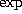

id = expr;
diff(var, tvar) = expr;
where tvar is the time variable and expr
is a valid mathematical expression made from
numbers, the time variable, the state variables,
elementary functions , , , ,
, , ,
 , and , using the four arithmetic
operators and function composition. For example
a = sin(1) + log(1 + exp(-0.5));
b = a + cos(0.1);
c = a+b;
ff = sin(x+t) * exp(-x*x);
diff(x,t) = c * ff - tan(t);
are all valid statements.
Taylor also understands if-else expressions and non-nested sums. For example, taylor accepts the following statements:
ss = sum( i*sin(i * x)+ i *cos(i*t), i=1,10);
diff(x,t) = ss;
diff(y,t) = if(y>t) { if(y>0.0) { y } else { 1-y } }
else { y+t};
The detailed input syntax is given in Appendix A.